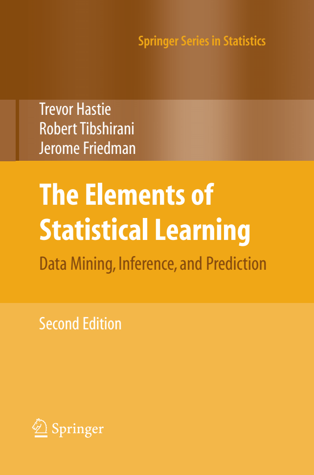

Este grupo de estudio se reune para estudiar el libro The Elements of Statistical Learning. El objetivo es permitir a la gente comprender mejor el contenido del libro, sin importar el conocimiento previo que tenga. Puedes encontrar más información aquí.
Los recursos que utilizamos en el estudio de grupo se enlistan a continuación:
Meeting ID: 857 1696 5250
Passcode: EoSL
Nos reunimos cada jueves a las 7 p.m. (UTC-6; horario del centro de México). Además, las reuniones son en Español.
Si quieres editar en el proyecto de Overleaf, envía un e-mail y te damos acceso.
También puedes enviar un e-mail para solicitar permiso para editar el proyecto. Nota que las demostraciones pueden requerir de un conocimiento avanzado de matemáticas.
Puedes descargar el libro y los conjuntos de datos utilizados en los siguientes enlaces:
Nota que el libro está escrito en inglés.
